Komposition von lokal lipschitzstetigen Funktionen
1. Satz
Seien  metrische Räume und 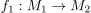 bzw. 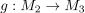 lokal lipschitzstetige Funktionen mit Lipschitzkonstante 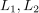
Dann ist
metrische Räume und 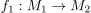 bzw. 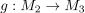 lokal lipschitzstetige Funktionen mit Lipschitzkonstante 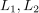
Dann ist
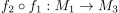
1
ebenfalls lipschitzstetig
2. Beweis
Sei 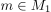 gegeben
Nach Annahme ist 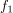 auf einer Umgebung  von
von  Lipschitzstetig mit Lipschitzkonstante 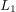.
Ebenso 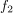 mit einer Umgebung 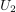 von 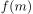 und Lipschitzkonstante 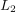
Nach Definition
Lipschitzstetig mit Lipschitzkonstante 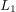.
Ebenso 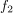 mit einer Umgebung 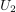 von 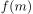 und Lipschitzkonstante 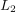
Nach Definition  mit 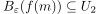.
Da das Umgebungssystem abgeschlossen ist unter endlichem Schnitt sei dann 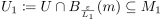 eine Umgebung von .
Es gilt dann:
mit 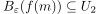.
Da das Umgebungssystem abgeschlossen ist unter endlichem Schnitt sei dann 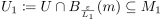 eine Umgebung von .
Es gilt dann:
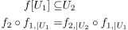
2
und 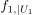 nach Konstruktion bzw. 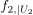 nach Annahme lipschitzstetig Daraus folgt aus der Komposition von lipschitzstetigen Funktionen, dass 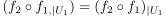 Lipschitzstetig ist auf einer Umgebung 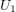 bzw. lokale Lipschitzstetigkeit